- 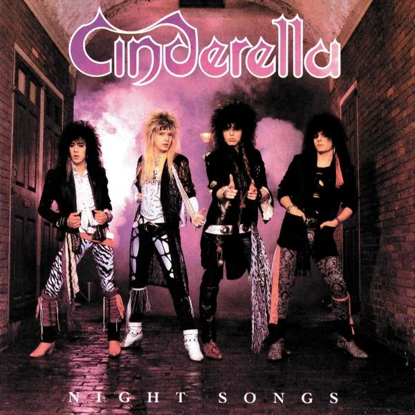
- 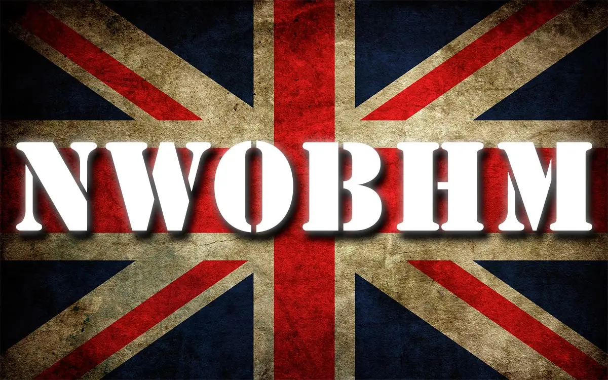
- 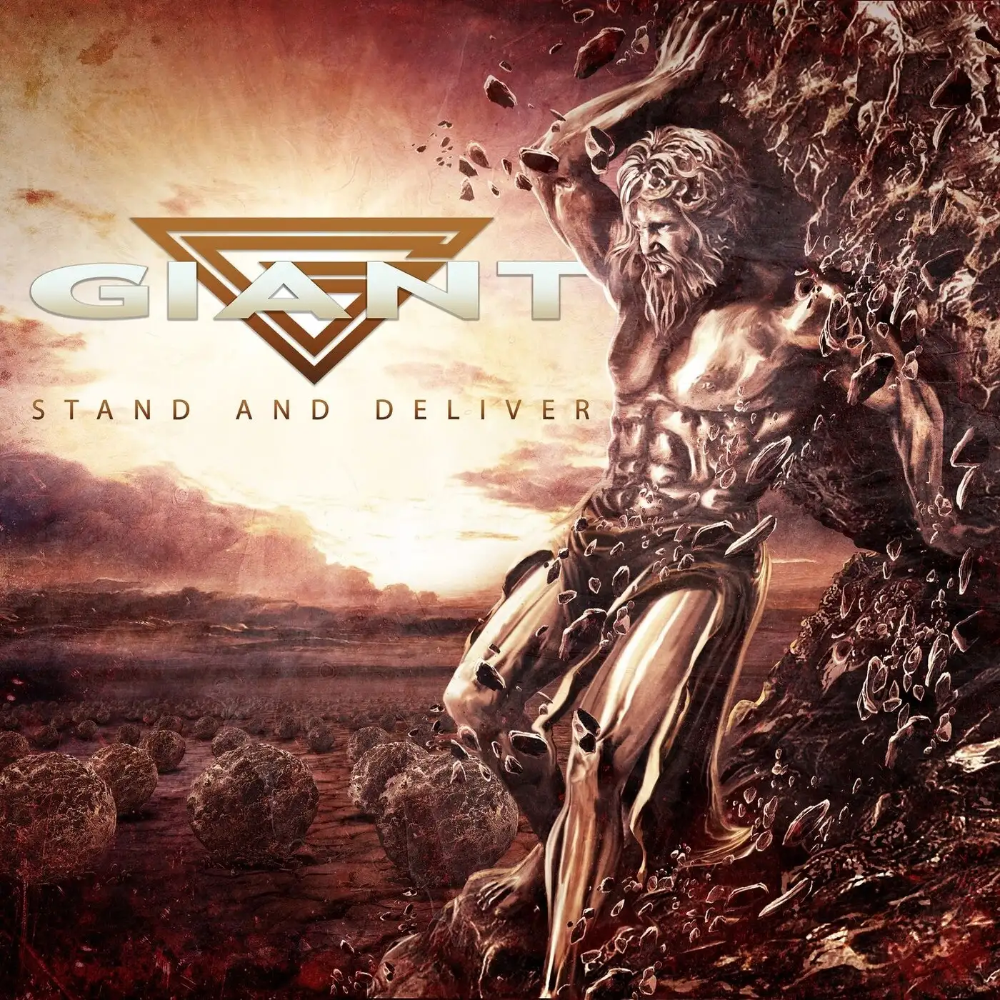
- 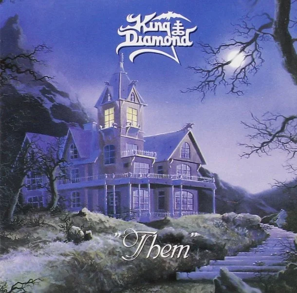
- 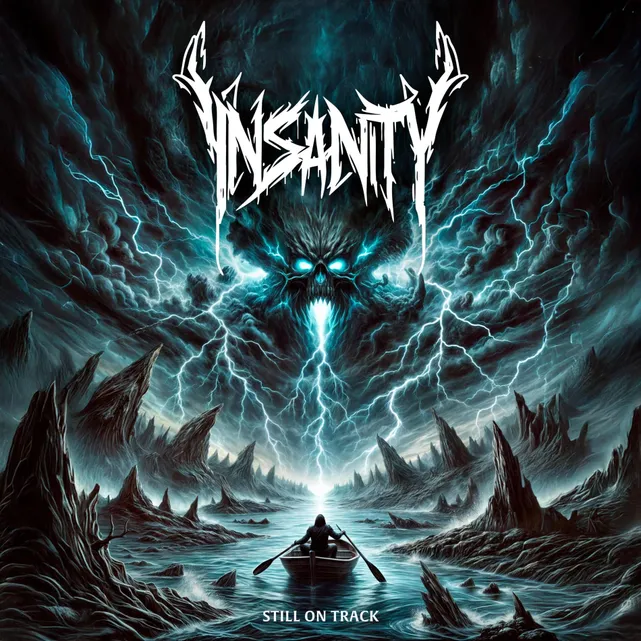
- 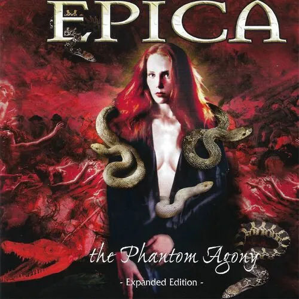
- 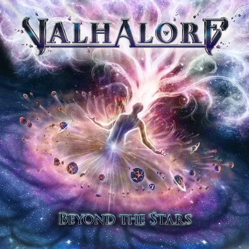
- 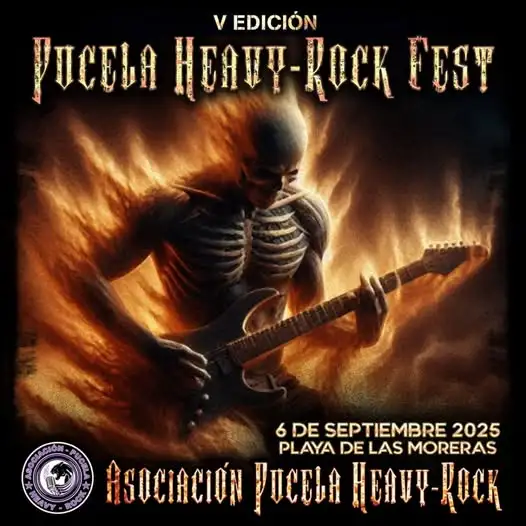
- 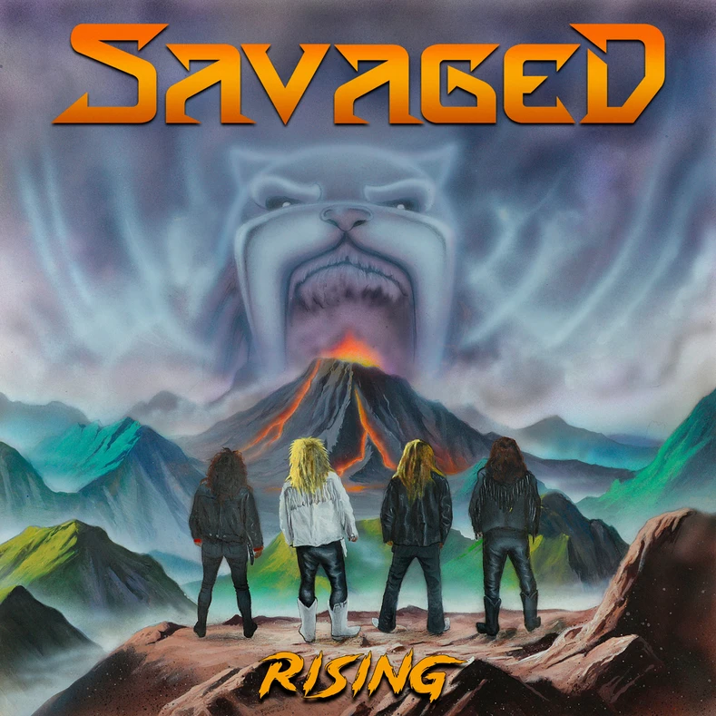
- 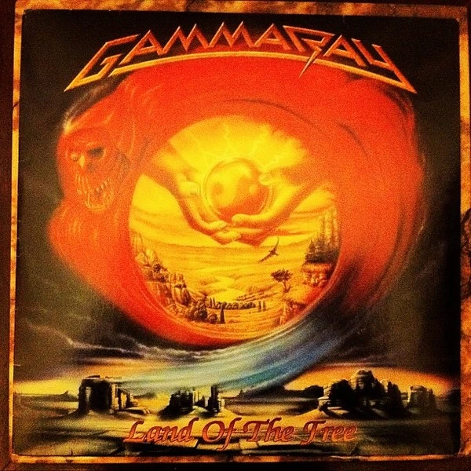
- 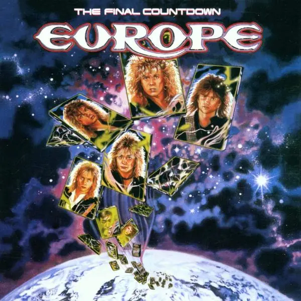
- 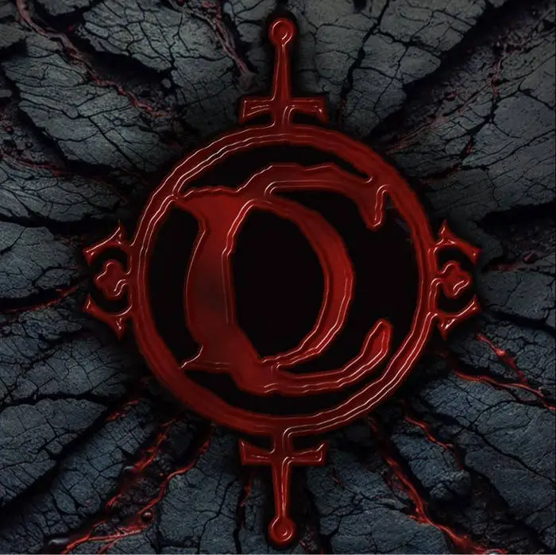
- 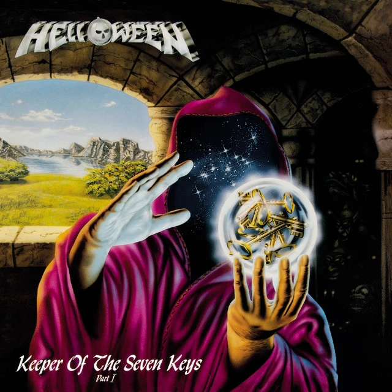
- 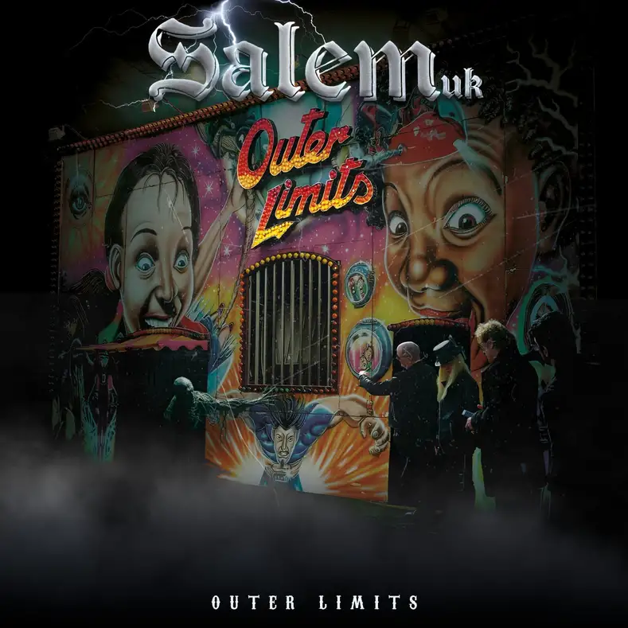
- 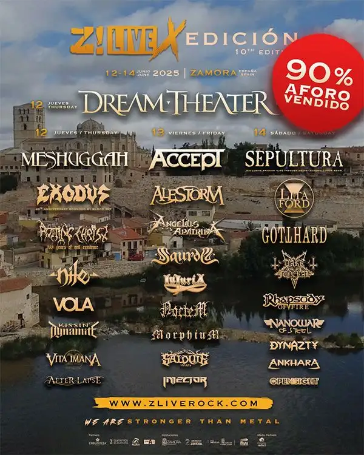
- 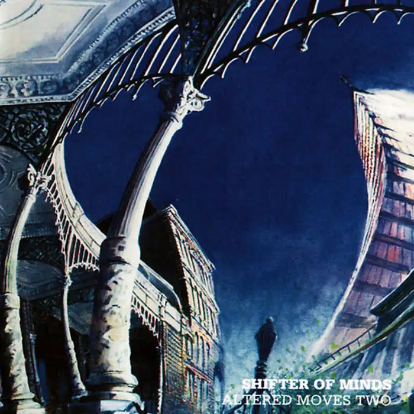
Rockfemérides 7 Junio
Hoy nace el incombustible rockero Miguel Ríos; el líder y vocalista de Riot, Mark Reale cumpliría años (R.I.P. 2012); Cinderella debuta con «Night Songs», Nightwish lanza su quinto álbum llamado »Once» y Dream Theater publica su octavo álbum de estudio llamado »Octavarium».
El Rock de mi vida – Parte 2.3: La New Wave Of British Heavy Metal
«Fue un tiempo excitante para nosotros. Nuestro primer disco en una compañía grande, compitiendo en los charts británicos con mega estrellas como Michael Jackson» – Rob Weir (Tygers of Pan Tang)
Giant – Stand And Deliver (2025)
«Regreso a la época dorada del Hard americano de los 80»
Rockfemérides 1 junio
Hoy cumple años el guitarrista de The Rolling Stones, Ronnie Wood; The Runaways publica su álbum debut de título homónimo, King Diamond edita “Them”, Annihilator pone en la calle «Criteria for a Black Widow» y Ghost publica su cuarto ábum «Prequelle».
Noticias: Strangers + Glenn Hughes + Fran Vázquez
Strangers mañana 7 de Junio en Madrid con Genoma – Nuevo single de Glenn Hughes – Nuevo disco de Fran Vázquez.
Insanity – Still On Track (EP) (2025)
“Moviéndose con soltura por las corrientes más actuales del Thrash Metal”
Epica – The Phantom Agony (2003)
«Metal sinfónico épico y una Simone Simons que nos enamoró para siempre»
Valhalore – Beyond The Stars (2025)
“Estrellas que brillan con una fuerza increíble”
Noticias: Pucela Rock Fest + The Quireboys + Alcatrazz
Primera confirmación del Pucela Heavy-Rock Fest – Nuevo vídeo single de The Quireboys – Re grabación de Alcatrazz y fechas.
Savaged – Rising (LP 2025 No Remorse Records)
Rockfemérides 29 mayo
Hoy cumplen años Blaze Bayley, exvocalista de Iron Maiden; Ailyn, exvocalista de Sirenia; Gamma Ray publica «Land Of The Free»; Iron Maiden publica su duodécimo álbum de estudio llamado «Brave New World» y Warcry edita «Donde el silencio se rompió».
Rockfemérides 26 mayo
Hoy cumple años Lenny Kravitz , se publica el mítico single «Smoke on the Water» de Deep Purple, Europe lanza el exitoso »The Final Countdown» y Led Zeppelin publica el DVD »Live Royal Albert Hall».
Cain’s Dinasty – Dinastía de Caín (2025)
“Cuando la sangre habla en castellano, la herencia se transmite mejor”
Helloween – Keeper of the Seven Keys Part I (1987)
Un día como hoy Kiss publica su noveno álbum «Dynasty», Iron Maiden publica el single »Sanctuary’, se lanza un álbum histórico como el »Keeper Of The Seven Keys part. 1″ de Helloween, se estrena el vídeo de Metallica «Until it Sleeps» y se lanza el segundo álbum en vivo de Blind Guardian llamado »Live».
Salem UK – Outer Limits (LP 2024 Rude Awakening rec)
«Un circo de límites desconocidos»
Ver...Z Live anuncia los horarios para su 10ª edición
Z Live de Zamora publica los horarios para la presente edición
Altered Moves Two – Shifter Of Minds reedición (2025)
“Mentes cambiadas y revisitadas”